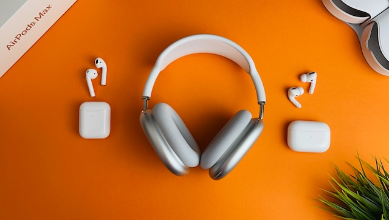
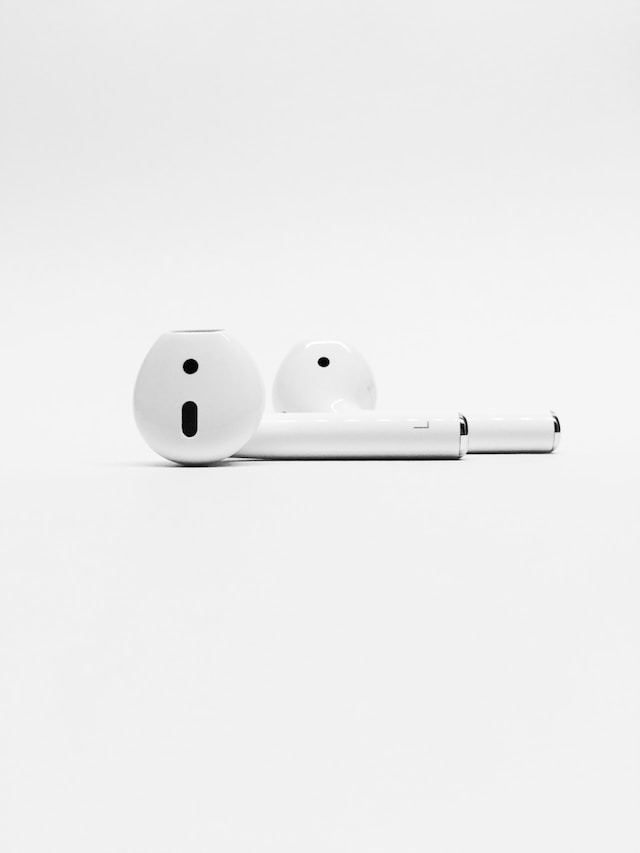

com um preço justo e acessível!
Sem ruido, bons graves, médios e agudos. Uma opção barata e com uma ótima qualidade.
Fone concha
Fone concha
Fones resistentes a queda, a água e a aventuras, sem o medo de esroscar em alguma coisa no caminho. Além de suportarem uma distância de 5 metros do dispositivo conectado.
Fone concha
Fone intra auricular
